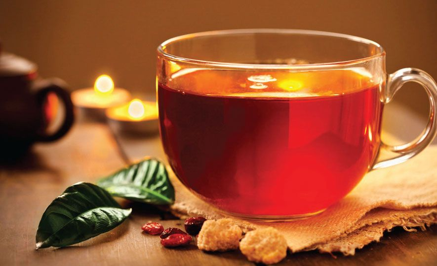
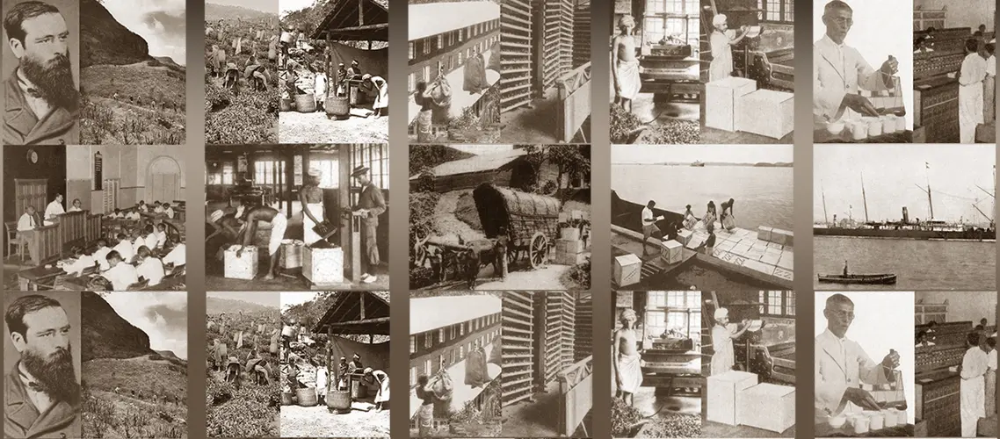
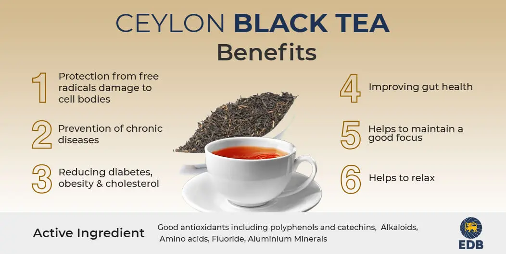
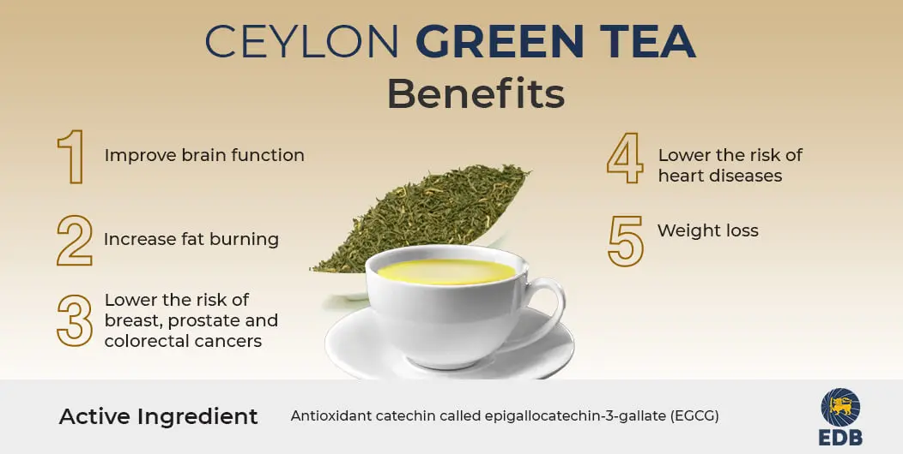
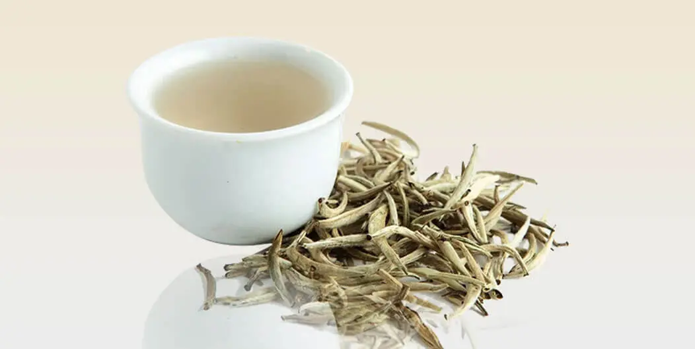

What is Ceylon Tea?...
Sri Lankan tea (known for generations as Ceylon Tea) carries behind it a heritage and success
story like no other. A product that began as a diversification experiment in 1867 spanning just
19 acres of
land has today surpassed all geographical borders to satisfy 19% of global demand.
Reputed for its
signature taste and aroma, Sri Lanka has become the world's third largest tea exporter to the
world, the country's
largest employer and has the distinction of supplying tea to the Olympic and Commonwealth Games.
It is a
great equalizer, demanding attention from the counter of the smallest eatery to the most
exclusive
tea-bars in the
world.
Sri Lankan tea growers and manufactures adopt Good Agricultural Practices (GAP) and Good Manufacturing Practices (GMP) and produce tea under the highest social and environmental standards. The tea processing factories for exports continually improve and upgrade to meet required technical and hygienic standards to conform to the international food safety requirements.
Why Ceylon Tea?...
Celebrated to be the finest in the world, the unique flavour,
fragrance and freshness of
Ceylon
Tea set it apart from the rest.
Represented by the Lion logo and the ‘Ceylon
Tea’ trademarks
assuring that it’s a
quality product of Sri Lanka
- Passion & Provenance – Ceylon Tea is grown and produced according to uncompromising, traditional methods and standards since 1880.
- Quality Certified by the Government -The name ‘Ceylon Tea’ and the famous Lion logo that goes with it indicates the tea grown, manufactured and packed entirely in Sri Lanka conforming to strict quality standards laid down and administered by the Sri Lanka Tea Board
- Diversity – Ceylon Tea is much loved for its unmatched quality and variety in taste, character and appearance based on the different parts of its tea growing regions. The 7 agro climatic regions - Nuwara Eliya, Uva, Uda Pussellawa, Dimbula, Kandy, Ruhuna & Sabaragamuwa
- Ceylon Teas are Handpicked -The relative amounts of the polyphenols present in tea, the polyphenol oxidase (enzyme), the theaflavins, thearubigins, caffeine, essential oils, sugars, amino acids in the bud and the first two tender leaves will all contribute to the quality of the brewed liquor in a positive way. Hence the importance of traditional and disciplined picking of teas in Ceylon
- The Cleanest tea in the world – Sri Lanka retains its position as the ‘Best in Class’ producer of Quality Tea, considered by the Technical Committee of the ISO as the cleanest tea in the world.
Story of Ceylon Tea...
Sri Lanka was introduced to tea much later. Until the 1860’s the main crop produced in Sri Lanka was Coffee but in 1869 a fungus destroyed the crop so the estate owners had to diversify into other crops. Firstly a tea plant was brought to Sri Lanka from China and was planted in the Botanical Gardens in Peradeniya, this was planted for non-commercial purposes. In 1867 James Taylor planted 19 acres of tea in the Loolecondera estate in Kandy, and there in on tea became a commercially used crop in Sri Lanka. In 1872, James Taylor started a fully equipped tea factory in the same estate and in the same year he made the first sale of tea in Kandy. In 1873 the first international sale of tea was made, a shipment consisting of 23lb’s of tea was sent to an auction in London.
The production of tea rose rapidly in 1880’s and by 1899 the area cultivated had exceedingly grown to nearly 400,000 acres of tea. By that time British figures such as Henry Randolph Trafford arrived in Sri Lanka and purchased coffee estates, his knowledge about coffee was limited but his knowledge about to tea was vast and he is now considered on of the pioneers in tea plantation in Sri Lanka
The rapid growth and popularity of tea, lead to it being sold at several auctions. The first public auction of tea was held at Somerville & Co in July 1883. and then went on to being sold at auctions held worldwide, a total sum of one million tea packets were sold in the Chicago World Fair in 1893. The Ceylon Tea Traders association was formed in 1894 and today all tea produced in Sri Lanka is conducted by this association along with the Ceylon Chamber of Commerce. Later in 1896 the Colombo Broker’s Association was formed and in 1915 the first Ceylonese was appointed as the Chairman of the Planter’s Association, his name was Thomas Amarasuriya. By 1927 the production if tea in the country exceeded 100,00o metric tonnes which was almost entirely for export purposes
By the 1960’s the total production of tea and exports exceeded to 200,000 metric tones and 200,000 hectares, and for the first time in 1965, Sri Lanka became the world’s largest tea exporter. In 1963 the production and export of instant Tea was introduced and the first International Tea Convention was held in 1966 to commemorate 100 years of tea industry in Sri Lanka. In 1976 the Sri Lankan Tea Board was founded along with others such as the Janatha Estate Development Board, Sri Lanka Estate Plantation Cooperation and the Tea Small Holding Development Authority, these bodies played a major part when it came to supervising the estates acquired by the state. And this same year tea bags were introduced to export.
In 1980 the official supplier of tea for the 1980 Moscow Summer Olympic Games was Sri Lanka, and again in 1982 for the 12th Commonwealth Games held Brisbane and alter on in 1987 at the Expo 88 in Australia.
Subsequently in the years to come the production and the export of tea rapidly increased and was introduced to variations, such as the production of Green Tea and also other flavored tea. In 2001 tea made it’s first online sale at the Colombo Tea auctions. Ceylon Tea is famous worldwide, the weather conditions in the country provides vastly to the success of its growth and is made famous by the taste and quality that is only unique to Ceylon Tea. Sri Lanka caters Ceylon Tea to a number of global markets and has become the most favorite beverage among its consumers worldwide.
Major Ceylon Tea Varieties....

The taste and richness of Ceylon Tea is resplendently known around the world. The care
and dedication
that goes into producing Ceylon Tea is what makes it extra special. Sri Lanka is home to over
188,000 hectares of land under tea cultivation which yields about 298,000 tonnes of produced tea and
it accounts for more than 19% of world exports.
Ceylon Tea that is being exported around the
world
comes in several types, the most commonly and famously enjoyed is of course Ceylon Black tea,
secondly Green tea and lastly White Tea or ‘ Silver Tips’. These teas are produced in different ways
to achieve it’s quality and taste.
- Ceylon Black Tea
- Ceylon Green Tea
- Ceylon White Tea
Ceylon Black Tea
Ceylon Black tea is the most oxidized variety and contains more caffeine than the rest of the varieties. Black tea is best grown in a climate that is hot and moist. As a result of being close to the equator the climatic conditions of Sri Lanka is ideal to grow and produce Black tea. Tea is grown in numerous estates around the country which vary in altitude thus giving it distinctive qualities. High grown tea has a honey golden liquor that is light and considered to be one of the best tasting teas around the world due to its well-defined flavor, aroma and strength. Low grown tea has a burgundy brown liquor and a flavor which is rather strong. Mid grown teas have a strong, rich and full-bodied flavor.
Ceylon Green Tea
Like black tea, tea lovers around the world are in the process of discovering the joys of green tea. The Ceylon Green Tea industry, though very young, is growing rapidly as the product has garnered a popularity among tea drinkers around the world. Ceylon Green tea has a fuller body with a rather pungent and malty, nutty flavor to it. Today Ceylon Green Tea is manufactured in a number of estates in mid-grown and high-grown districts. Ceylon Green teas have characteristics that differentiate them from the rest of the green teas produced around the world, they tend to be darker in both dry and infused leaf and contains a rather rich flavor.
Ceylon White Tea
Ceylon white is also produced from the same plant as the black and green tea, though the plant has slight differences to it. The leaves and buds are left to wither in natural sunlight and there after they are lightly processed to avoid oxidization, this results in white tea being the least processed tea of all and is abundant with health benefits. Ceylon white is is famously known as ‘Silver Tips’, this is due to the color it transforms into after the manufacturing process, it is also one of the most priced teas in Sri Lanka. Ceylon White tea is famous among tea lovers for its mild and sweet flavor, it has a delicate, very light liquoring with notes of pine and honey and a golden coppery infusion.